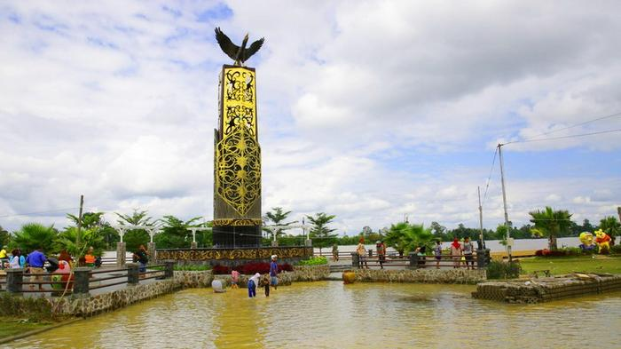

Provinsi Kalimantan Utara
Provinsi termuda di Indonesia dengan kekayaan alam, budaya, dan wisata tropis.

Provinsi termuda di Indonesia dengan kekayaan alam, budaya, dan wisata tropis.
Kalimantan Utara berdiri tahun 2012 sebagai provinsi ke-34 Indonesia dan berbatasan langsung dengan Malaysia.
Tanjung Selor merupakan pusat pemerintahan Provinsi Kalimantan Utara sekaligus wilayah bersejarah Kesultanan Bulungan.
Memiliki rumah panjang dan adat kuat.
Budaya Melayu-Islam pesisir.
Berperan dalam sejarah daerah.
Alat musik petik khas suku Dayak yang menghasilkan alunan lembut dan menenangkan.
Digunakan dalam upacara adat, tarian tradisional, dan ritual masyarakat Kalimantan Utara.
Alat musik pukul berbahan logam yang biasanya mengiringi tarian dan acara adat.
Makanan tradisional dari ikan mentah atau rumput laut yang dicampur kelapa sangrai dan bumbu khas.
Kerang laut khas Kalimantan Utara yang biasanya dibakar atau direbus dan disajikan dengan sambal.
Olahan ikan pari dengan bumbu rempah khas pesisir Kalimantan Utara.
Kabupaten Bulungan
Tanjung Selor – Bulungan
Kawasan Pedalaman Kalimantan Utara